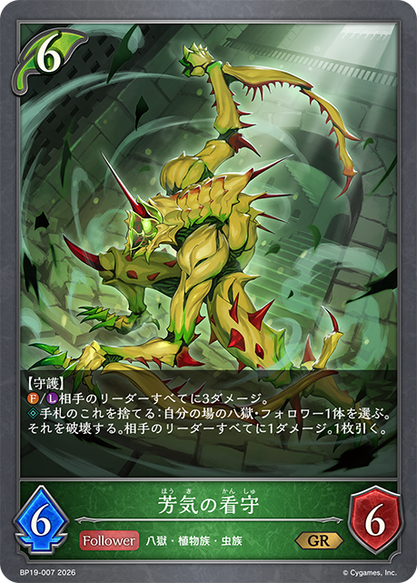
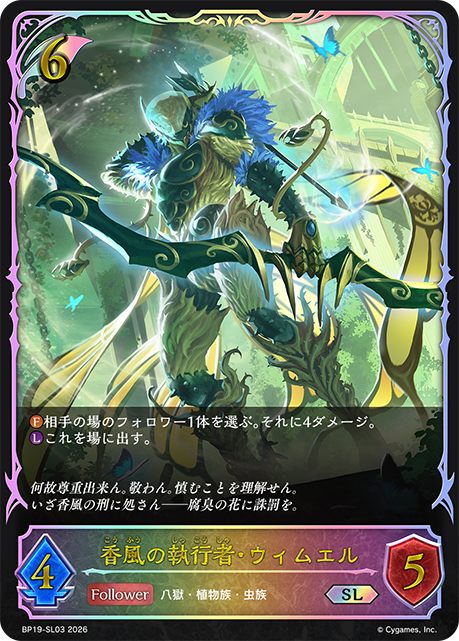

1 ヌオー
1/20｜2026/04/06
4E629
多了哪些牌
 +2
+2 +1
+1 +1
+1少了哪些牌
 -1
-1 -1
-1 -1
-1 -1
-1 主BP18-123/PR-477：炎術検定A級主卡组 × 2
主BP18-123/PR-477：炎術検定A級主卡组 × 2 主BP18-014/BP18-P07：樹律の祈り子主卡组 × 2主BP18-126/BP18-P49：区役所の丙種職員主卡组 × 3
主BP18-014/BP18-P07：樹律の祈り子主卡组 × 2主BP18-126/BP18-P49：区役所の丙種職員主卡组 × 3 主BP18-120/PR-463：新約都市・透京主卡组 × 3
主BP18-120/PR-463：新約都市・透京主卡组 × 3 主BP18-003/BP18-SL03：樹正の木鐸・キョウ主卡组 × 3
主BP18-003/BP18-SL03：樹正の木鐸・キョウ主卡组 × 3 主BP18-117/BP18-SL27：魔汚区役所職員・災藤主卡组 × 3
主BP18-117/BP18-SL27：魔汚区役所職員・災藤主卡组 × 3 主BP18-005/BP18-P01：樹権の剪定者主卡组 × 3主BP18-009/BP18-P05：樹都の拳士主卡组 × 3
主BP18-005/BP18-P01：樹権の剪定者主卡组 × 3主BP18-009/BP18-P05：樹都の拳士主卡组 × 3 主BP18-119/PR-481：歪なる進歩主卡组 × 3
主BP18-119/PR-481：歪なる進歩主卡组 × 3 主EBD01-007/SP01-001/SP01-SL01/SP01-SP01/SP01-SP02/SP01-U01：揺蕩う意志・スピネ主卡组 × 2主BP02-110：アークエンジェル・レイナ主卡组 × 3
主EBD01-007/SP01-001/SP01-SL01/SP01-SP01/SP01-SP02/SP01-U01：揺蕩う意志・スピネ主卡组 × 2主BP02-110：アークエンジェル・レイナ主卡组 × 3 主BP15-004/BP15-SL04/PR-394：凍土の女王・ピアシィ主卡组 × 3
主BP15-004/BP15-SL04/PR-394：凍土の女王・ピアシィ主卡组 × 3 主BP18-001/BP18-SL01：浄樹の六銘伝・ロロ・ロニエ主卡组 × 3主BP18-008/BP18-P04：因芽応報主卡组 × 1主BP18-013/PR-470：浄土蒔植主卡组 × 2
主BP18-001/BP18-SL01：浄樹の六銘伝・ロロ・ロニエ主卡组 × 3主BP18-008/BP18-P04：因芽応報主卡组 × 1主BP18-013/PR-470：浄土蒔植主卡组 × 2 主BP18-116/BP18-SL26：帥忍部長・煤木万裁主卡组 × 1
主BP18-116/BP18-SL26：帥忍部長・煤木万裁主卡组 × 1 进BP02-111：アークエンジェル・レイナ进化 × 1
进BP02-111：アークエンジェル・レイナ进化 × 1 进BP15-005/BP15-SL05/PR-395：凍土の女王・ピアシィ进化 × 1
进BP15-005/BP15-SL05/PR-395：凍土の女王・ピアシィ进化 × 1 进BP18-118/BP18-SL28/BP18-U07：魔汚区役所職員・災藤进化 × 2
进BP18-118/BP18-SL28/BP18-U07：魔汚区役所職員・災藤进化 × 2 进BP18-006/BP18-P02：樹権の剪定者进化 × 2
进BP18-006/BP18-P02：樹権の剪定者进化 × 2 进BP18-010/BP18-P06：樹都の拳士进化 × 1
进BP18-010/BP18-P06：樹都の拳士进化 × 1 进BP18-015/BP18-P08：樹律の祈り子进化 × 1
进BP18-015/BP18-P08：樹律の祈り子进化 × 1 进BP18-002/BP18-SL02/BP18-U01：浄樹の六銘伝・ロロ・ロニエ进化 × 2+2+1+1-1-1-1-1+2+1-1-1-1+2+1+1+1-1-1-1-1-1+1-1+1+1-1-1+1-1+1-1+1+1-1-1+1+1-1-1+2+1+1+1-1-1-1-1-1
进BP18-002/BP18-SL02/BP18-U01：浄樹の六銘伝・ロロ・ロニエ进化 × 2+2+1+1-1-1-1-1+2+1-1-1-1+2+1+1+1-1-1-1-1-1+1-1+1+1-1-1+1-1+1-1+1+1-1-1+1+1-1-1+2+1+1+1-1-1-1-1-1 +2
+2 +1+1-2-1-1+2+1+1-3-1+1+1-1-1+2+1+1+1-1-1-1-1-1+2+1-1-1-1+2+1-1-1-1+2+1+1-1-1-1-1+2+1+1-1-1-1-1+1+1-1-1
+1+1-2-1-1+2+1+1-3-1+1+1-1-1+2+1+1+1-1-1-1-1-1+2+1-1-1-1+2+1-1-1-1+2+1+1-1-1-1-1+2+1+1-1-1-1-1+1+1-1-1 +3
+3 +1+1+1+1-3-1-1-1-1+1+1+1+1-3-1
+1+1+1+1-3-1-1-1-1+1+1+1+1-3-1 +3
+3 +1+1+1-3-1-1-1+1-1+2+1+1+1-3-1-1+2+1+1-1-1-1-1+2+1+1+1-1-1-1-1-1+1-1+3+1+1+1+1-3-1-1-1-1+2+1+1+1-1-1-1-1-1+2+1+1-3-1+3+1+1+1-3-1-1-1+1+1-1-1+1+1-1-1+1+1-1-1+1-1
+1+1+1-3-1-1-1+1-1+2+1+1+1-3-1-1+2+1+1-1-1-1-1+2+1+1+1-1-1-1-1-1+1-1+3+1+1+1+1-3-1-1-1-1+2+1+1+1-1-1-1-1-1+2+1+1-3-1+3+1+1+1-3-1-1-1+1+1-1-1+1+1-1-1+1+1-1-1+1-1 +3
+3 +3+3
+3+3
+3 +3
+3 +3
+3 +3+2+2
+3+2+2 +2
+2 +2
+2
+1-3-3-3-3-3-3-2-2-2-1-1-1-1-1-1+2+1+1+1-1-1-1-1-1+2+1-1-1-1+3+1+1+1+1-3-1-1-1-1+1+1-1-1+1-1+1+1-1-1+1+1+1-1-1-1| 图片 | 平均张数 | 使用率 | 0张比例 | 1张比例 | 2张比例 | 3张比例 |
|---|---|---|---|---|---|---|
|
3.00 | 100.0% | 0.0% | 0.0% | 0.0% | 100.0% |
|
3.00 | 100.0% | 0.0% | 0.0% | 0.0% | 100.0% |
|
3.00 | 100.0% | 0.0% | 0.0% | 0.0% | 100.0% |
|
2.61 | 100.0% | 0.0% | 2.2% | 34.8% | 63.0% |
|
2.35 | 100.0% | 0.0% | 2.2% | 60.9% | 37.0% |
|
2.93 | 97.8% | 2.2% | 0.0% | 0.0% | 97.8% |
|
2.89 | 97.8% | 2.2% | 0.0% | 4.3% | 93.5% |
|
2.48 | 97.8% | 2.2% | 0.0% | 45.7% | 52.2% |
|
2.24 | 97.8% | 2.2% | 2.2% | 65.2% | 30.4% |
|
2.09 | 97.8% | 2.2% | 2.2% | 80.4% | 15.2% |
|
2.67 | 95.7% | 4.3% | 0.0% | 19.6% | 76.1% |
|
2.33 | 95.7% | 4.3% | 2.2% | 50.0% | 43.5% |
|
2.59 | 93.5% | 6.5% | 0.0% | 21.7% | 71.7% |
|
2.57 | 89.1% | 10.9% | 0.0% | 10.9% | 78.3% |
|
0.74 | 73.9% | 26.1% | 73.9% | 0.0% | 0.0% |
|
0.80 | 65.2% | 34.8% | 56.5% | 2.2% | 6.5% |
|
0.50 | 26.1% | 73.9% | 2.2% | 23.9% | 0.0% |
|
0.26 | 19.6% | 80.4% | 13.0% | 6.5% | 0.0% |
|
0.33 | 10.9% | 89.1% | 0.0% | 0.0% | 10.9% |
|
0.07 | 4.3% | 95.7% | 2.2% | 2.2% | 0.0% |
| 0.04 | 4.3% | 95.7% | 4.3% | 0.0% | 0.0% | |
|
0.07 | 2.2% | 97.8% | 0.0% | 0.0% | 2.2% |
|
0.07 | 2.2% | 97.8% | 0.0% | 0.0% | 2.2% |
| 0.07 | 2.2% | 97.8% | 0.0% | 0.0% | 2.2% | |
|
0.07 | 2.2% | 97.8% | 0.0% | 0.0% | 2.2% |
|
0.07 | 2.2% | 97.8% | 0.0% | 0.0% | 2.2% |
|
0.07 | 2.2% | 97.8% | 0.0% | 0.0% | 2.2% |
|
0.04 | 2.2% | 97.8% | 0.0% | 2.2% | 0.0% |
|
0.04 | 2.2% | 97.8% | 0.0% | 2.2% | 0.0% |
|
0.04 | 2.2% | 97.8% | 0.0% | 2.2% | 0.0% |
| 图片 | 平均张数 | 使用率 | 0张比例 | 1张比例 | 2张比例 | 3张比例 |
|---|---|---|---|---|---|---|
|
2.00 | 100.0% | 0.0% | 0.0% | 100.0% | 0.0% |
|
2.00 | 100.0% | 0.0% | 0.0% | 100.0% | 0.0% |
|
1.74 | 97.8% | 2.2% | 21.7% | 76.1% | 0.0% |
|
1.13 | 97.8% | 2.2% | 82.6% | 15.2% | 0.0% |
|
0.98 | 97.8% | 2.2% | 97.8% | 0.0% | 0.0% |
|
1.00 | 95.7% | 4.3% | 91.3% | 4.3% | 0.0% |
|
0.93 | 93.5% | 6.5% | 93.5% | 0.0% | 0.0% |
|
0.13 | 10.9% | 89.1% | 8.7% | 2.2% | 0.0% |
|
0.07 | 2.2% | 97.8% | 0.0% | 0.0% | 2.2% |
|
0.02 | 2.2% | 97.8% | 2.2% | 0.0% | 0.0% |